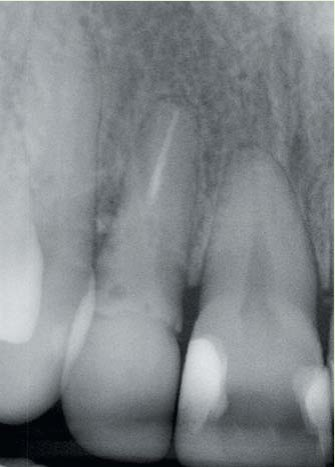
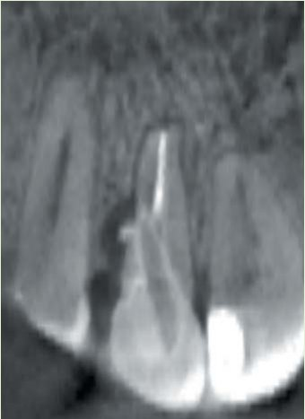
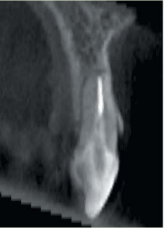
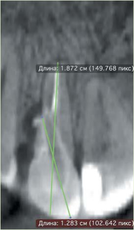
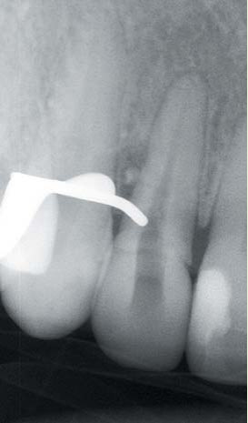
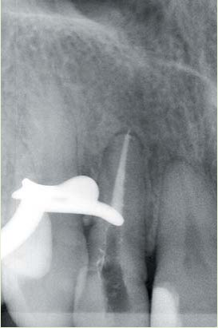
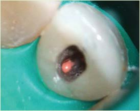
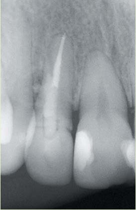
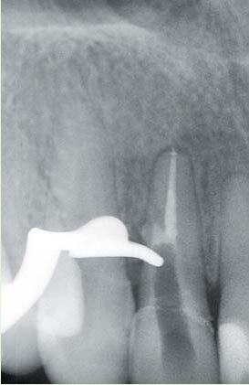
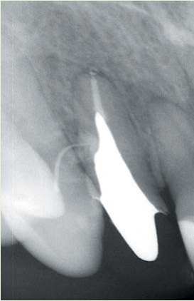

Практичний досвід · журнал «ДентАрт» 2014 №1 (74)
Перфорація чи щось більше... Ревізія ендодонтичної патології і динамічне спостереження
PERFORATION OR SOMETHING MORE… NON-SURGICAL ENDODONTIC RETREATMENT OF ENDODONTIC PATHOLOGY AND FOLLOW-UP PATIENT
У щоденній практиці лікаря-стоматолога зазвичай зустрічаються випадки, коли легко оцінити прогноз зуба і обрати адекватну тактику ведення. Однак існують ситуації, коли зробити це одномоментно неможливо. Наприклад, наявність ендодонтичного компоненту на тлі змін крайового періодонту або поєднана одонтогенно-синусна патологія. Для ведення таких станів рекомендовані детальна інформованість пацієнтів і підписання згоди на проведення оперативних маніпуляцій. Безпосередній результат лікування не скаже, яким буде прогноз, і лише динамічне спостереження зіграє остаточну роль у долі зуба.
Для підтвердження сказаного подаємо клінічний випадок.
Клінічний випадок
Пацієнтка В., 31 рік, звернулася в клініку з метою тотальної реабілітації зубощелепної системи.
Суб'єктивно — скарги відсутні. Лікування зуба 12 проведене 2 роки тому з приводу ускладненого карієсу.
Об'єктивно — на прикріплених яснах в ділянці зуба 12 є свищевий хід. Зондування — одинична кишеня з дистально-апроксимального боку глибиною 6 мм. Рухливість, перкусія, пальпація — у межах норми.
Рентгенологічне дослідження — на прицільній рентгенограмі є ділянка радіолюценції в середній частині, на дистальній поверхні кореня, що клінічно пов'язано з перфорацією стінки зуба скловолоконним штифтом (фото 1). На комп'ютерній томограмі цей факт був підтверджений (фото 2).
Рентгенологічно на прицільному знімку та комп'ютерній томограмі — деструкції періапікальних тканин не спостерігалося (фото 3).



Оцінка прогнозу і прийняття рішення про проведення ревізії. Для оцінки прогнозу ми використовували такі аспекти: періодонтологічний, ортопедичний і ендодонтичний статуси. Періостатус розглядали як позитивний, оскільки порушень генералізованого стану крайового періодонту не виявлено. Можливість відновлення також була — у зв'язку з наявністю адекватної кількості твердих тканин зуба. Ендодонтичний прогноз був сумнівним: перфорація стінки кореня не є показанням до видалення, але є поодинока кишеня і свищевий хід з локалізацією на вестибулярній стінці. Ці дві ознаки непатогномонічні і притаманні як вертикальній фрактурі кореня, так і дренуванню ендодонтичної патології. Для диференціації проблеми, враховуючи періо- і ортостатуси, ми вирішуємо провести ортоградну ревізію. Якщо причиною є механічна перфорація — то при правильних тактиці ведення і технічній маніпуляції буде досягнуто успіху. Якщо ж причиною була вертикальна фрактура кореня — будь-яке лікування не приведе до бажаного результату і хронічна симптоматика залишиться. При аналізі комп'ютерної томограми апікального періодонтиту не виявлено. Але при проведенні ревізії немає сенсу робити селективну ендодонтію (лише видалення штифта і закриття перфорації), оскільки в прогностичному плані при сприятливому результаті ятрогенного ускладнення отримати апікальний періодонтит було б нерозумно.
Тактика ведення. Оскільки перфорація давня, є деструкція, виповнена грануляційною тканиною з низьким рівнем рН (≈3), очевидною є необхідність нейтралізації середовища. Це можливо при використанні гіпохлориту натрію як основного робочого розчину і тимчасовому внесенні гідроокису кальцію терміном на 2 тижні. При цьому спостерігаємо за динамікою: якщо свищевий хід закриється і поодинока кишеня зменшиться в глибині або зникає, ми відзначимо це як позитивний результат, що дає можливість завершити лікування (закрити перфорацію і відновити коронкову частину). Присутність симптоматики під час другого візиту (через 14 днів) після адекватно проведеного лікування вкаже на наявність вертикальної фрактури кореня.
План лікування будується за попередньо отриманою комп'ютерною томограмою. Використовуючи інструменти вимірювання, знаходимо загальну довжину кореня, яка становила ≈18 мм від середини ріжучого краю (враховуючи, що дані при конусно-променевій комп'ютерній томографії одержуємо без спотворень), і при видаленні штифта на глибину ≈13 мм від кута, утвореного ріжучим краєм і медіальною поверхнею, локалізуємо перфорацію (фото 4).
Хід лікування. Після проведення анестезії та ізоляції робочого поля системою рабердам було створено доступ з оральної поверхні. Частину скловолоконного штифта, що міститься в коронковій і устьовій зонах, видалено за допомогою ультразвуку з використанням насадки файл-адаптер і ендосор файл 35 за ІСO. Розпломбування кореневого каналу проведене пасивними інструментами Профайл у методиці краун-даун до 35.04 та підтверджене рентгенологічно (фото 5). По завершенні іригаційного протоколу проведені обтурація силером ЕйЕйчПлас та інжекції гарячої гутаперчі (фото 6 а, б). Змінивши напрямок ультразвукової насадки, видалили залишки скловолоконного штифта. Діагностичне зафарбовування внутрішньої поверхні метиленовим синім не дало додаткової інформації. Після іригації порожнина заповнена гідроокисом кальцію на водній основі (Метапаста) так, щоб був контакт активного матеріалу і деструкції. Встановлено тимчасову пломбу із СІЦ (фото 7).






Через 14 днів об'єктивно відзначили відсутність свищового ходу, одиничну кишеню 4 мм, що засвідчувало позитивну динаміку і визначало завершальний етап — закриття перфорації. Оскільки кишеня повністю не закрилася, МТА є небажаним. Матеріалом вибору став АйЕрЕм, після застигання якого пацієнтку направили на протезування (фото 8).
Через 3 дні зафіксовано культьову вкладку і встановлено тимчасову коронку для продовження комплексного лікування.
Результат, дискусія. Пацієнтка повернулася через 3 місяці зі скаргою на свищовий хід, який знову відкрився. Об'єктивно — наявність одиничної кишені 6 мм з дистально-апроксимального боку зуба 12. Трейсинг підтвердив локалізацію проблеми (фото 9).

Причини невдачі:
- вертикальна фрактура кореня існувала із самого початку, після фіксації скловолоконного штифта (отриманий результат був псевдоуспіхом після адекватного очищення);
- фрактура з'явилася після ендодонтичної ревізії, яка зменшила кількість твердих тканин, а відповідно і міцність зуба;
- втрата тканин під час ортопедичної підготовки — видалення всіх стінок, стоншання кореневого дентину в поєднанні з інклинацією та протрузійним навантаженням ;
- комбінація факторів.
Рентгенологічне дослідження може бути ефективним при наявному просторі між відламками. Альтернатива — хірургічна діагностика на початковому етапі до ендодонтії: відкидання слизово-надкістного клаптя із зафарбовуванням поверхні кореня, використовуючи операційний мікроскоп.
Прогноз зуба 12 — негативний.
Висновки. Механічні перфорації не є показанням до екстракції зуба. Більша проблема — вертикальні фрактури, що з'являються при надмірній втраті тканин. Три клінічних симптоми (одинична вузька кишеня, свищовий хід і рентгенологічний «ефект краплі») непатогномічні і вимагають диференціації між справжньою тріщиною та ендодонтичною патологією. А це можливо після ревізії з наступним динамічним спостереженням. При плануванні роботи з такими зубами рекомендовані інформування пацієнта і підписання згоди на проведення лікування.
Література
- Rivera E.M., Williamson A. Diagnosis and treatment planning: cracked tooth. Tex Dent J. 2003;120: 278–283.
- Cameron C.E. The cracked tooth syndrome: additional findings. J Am Dent Assoc. 1976;93: 971–975.
- Ozer S.Y. Detection of vertical root fractures by using cone beam computed tomography with variable voxel sizes in an in vitro model. J Endod. 2011;37: 75–79.
- Berman L.H., Kuttler S. Fracture necrosis: diagnosis, prognosis assessment, and treatment recommendations. J Endod.2010;36: 442–446.
- Cohen S., Blanco L., Berman L. Vertical root fractures: clinical and radiographic diagnosis. J Am Dent Assoc. 2003;134: 434–441.
- Moule AJ, Kahler B. Diagnosis and management of teeth with vertical root fractures. Aust Dent J. 1999;44: 75–87.
- Alhadainy H.A. Root perforations. A review of literature . Oral Surg Oral Med Oral Pathol. 1994;78: 368–374.
- Torabinejad M., Rastegar A.F., Kettering J.D., Pitt Ford T.R.. Bacterial leakage of mineral trioxide aggregate as a root-end filling material. J Endodon. 1995;21: 109–112.
- Anderson R.W., Powell B.J., Pashley D.H. Microleakage of IRM used to restore endodontic access preparations. Endod Dent Traumatol. 1990;6: 137–141.
- Bondra D.L., Hartwell G.R., MacPherson M.G., Portell F.R. Leakage in vitro with IRM, high copper amalgam, and EBA cement as retrofilling materials. J Endodon. 1989;15: 157–160.
- Markowitz K., Moynihan M., Kim S. Biologic properties of eugenol and zinc oxide-eugenol. Oral Surg. 1992;73: 729–737.
- Hussely D.L., Killough S.A. A survey of general dental practitioners' approach to the restoration of root filled teeth. Int Endod J .1995;28: 91–94.
- Metzger Z., Abramovitz I., Abramovitz R., Tagger M. Correlation between remaining length of root canal filling after immediate post space preparation and coronal leakage . J Endodon . 2000;26: 724–728.
- Lee W-C, Yang S-F, Hwang Y-F, Chueh L.H., Chung K-H. Microleakage of endodontic temporary restorative materials. J Endod.1993;19: 516–520.